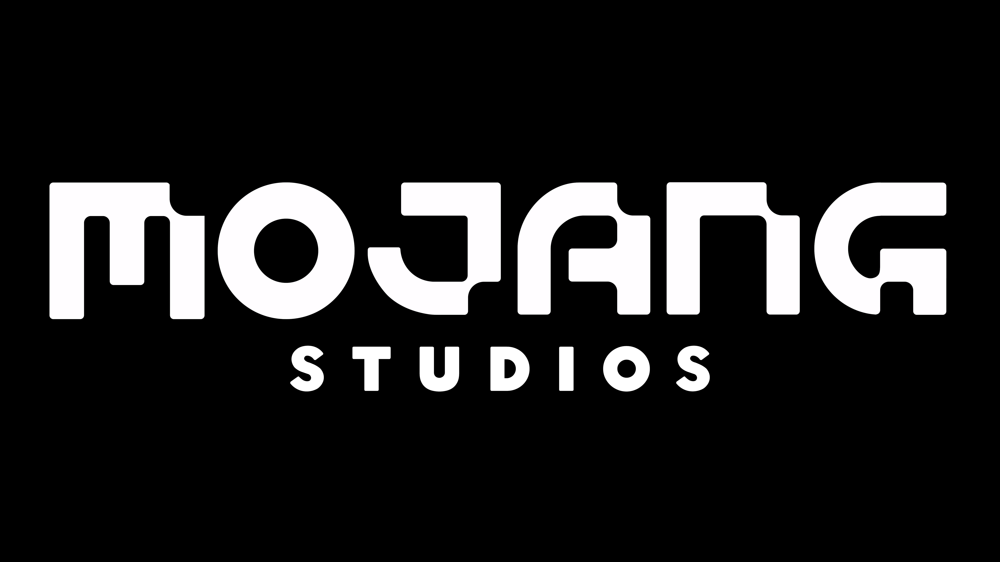

Mojang
Mojang Studios — шведская игровая компания, принадлежащая Xbox Game Studios. Наиболее известна как разработчик игры Minecraft. Основана в мае 2009 года Маркусом Перссоном. В 2014 году была куплена корпорацией Microsoft за 2,5 миллиарда долларов.
В мае 2009 года Маркус Перссон основал компанию Mojang SPO. Юридически компания основана только в сентябре 2010 года Маркусом Перссоном, Карлом Маннехом и Джейкобом Порсером, поскольку Перссон хотел иметь собственную студию для продолжительной разработки Minecraft. Студия получила новое название — «Mojang AB». Компания Microsoft купила права на Minecraft и её студию-разработчика Mojang за $2,5 млрд в сентябре 2014 года и Маркус Перссон с некоторыми другими разработчиками ушёл из компании. В честь своего 11-летия Mojang объявила о полном ребрендинге и переименовала студию в Mojang Studios.